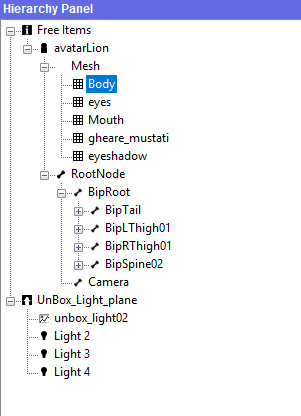
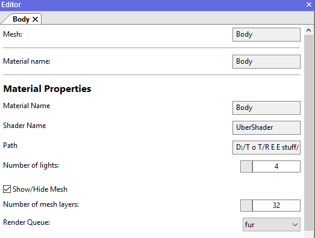
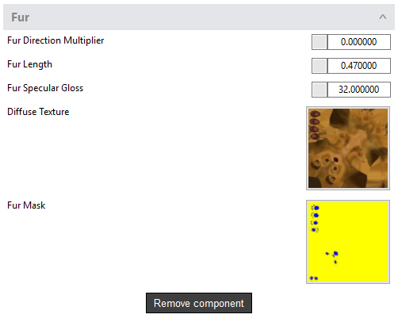
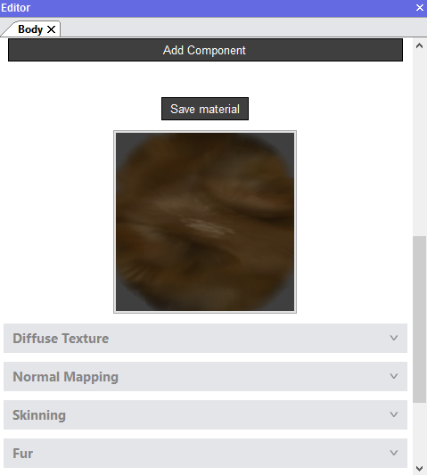

How can I add fur on an Avatar in the Animaze Editor?
The Fur shading component renders the model in layers, creating the effect of a furry surface; it can be attained for short fur effects only.
The component makes use of the Normals and vertex color geometry info to compute a general fur direction, where the vertex Red and Green channels give the direction in the Tangent and Binormal space, and the Alpha channel is used as a factor for the fur length.
Fur rendering is expensive resource-wise as, in theory, the model is rendered several times (number of fur layers) per frame to create the effect. Performance-wise, lowering the mesh fur layers helps, although it causes a drop of quality.
Import your model in Animaze Editor and follow the steps below to add fur on your avatar:
Requirements:
- Diffuse texture
- Fur mask, where:
-
Red channel controls the mix between normal specular and aniso specular, where 0 is normal and 255 is specular
-
Green channel is an additional layer alpha control. Alpha is the length, all lower value pixels are discarded, everything above will render at a calculated opacity, the green channel adds an additional transparency control.
-
Blue channel is the fur aniso specular intensity
-
Alpha Channel is used as fur length, controlling a smoother blend between fur areas (values closer to 255) and fur-less areas (values closer to 0) of the rendered surface
-
- In the Hierarchy Panel select the mesh that needs fur

- In the Editor Panel set the Render Queue on Fur to have it sorted back to front

- Push the Add Component button and select Fur from the components list
- Adjust the number of mesh layers of the avatar; by default, it comes with 1 layer and needs adjustment in order to be visible
- Load the fur mask texture and also check that the other necessary components are added, where applicable
- Adjust the Fur Direction Multiplier (fur direction), Fur Length and the Fur Glossiness of the fur in real-time by tuning the adjacent buttons

- In the Editor Panel push the Save material button when all of your changes are done
